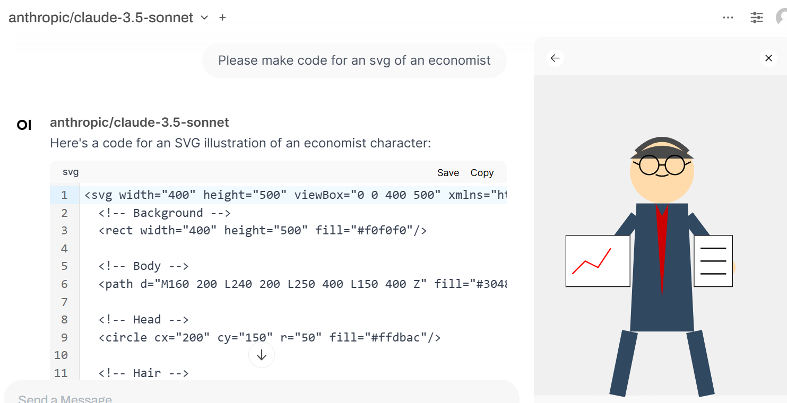

Today, I’m excited to experiment with generative AI’s ability to write code for SVGs.
The plan
Ask Claude to make me SVGs of economists
Ask GPT-4o what job the cartoon in the SVG depicts
Ask GPT-4o if it thinks the cartoon is a man or woman
Ask Claude to make me cartoons of economists who are women
1. Ask Claude to make me SVGs of economists
I prompted Claude “Please make code for an svg of an economist”, intentionally keeping the prompt vague to see what Claude thought economists looked like. I then regenerated the response 4 times. I found the responses to be pretty funny. Here’s an example of the prompt and response. 
And here’s our full lineup of SVG economists:
My main takeaways:
For simple SVG images, these images are pretty complex. Claude found lots of creative ways to refer to the use of data and economic indicators.
Claude does not seem to be very good at making SVGs where hair is properly placed on one’s head. Economist 4’s pointers are also pretty funny.
These all look pretty masculine to me.
2. Ask GPT-4o what job the cartoon in the SVG depicts
Next, I was curious which cartoon GPT-4o would be able to most easily identify as an economist. I asked GPT-4o first “What does this image depict?”, and then “What job do you think the cartoon figure has?”. I used a fresh window for each SVG.
| Economist SVG | Job GPT-4o Thinks It Has |
|---|---|
| 1 | “The cartoon figure is likely representing a business person or analyst, given the suit and the items resembling a graph and a report, which suggest involvement in data analysis or presentations.” |
| 2 | “The cartoon figure likely represents a financial professional, such as an economist, banker, or stockbroker, given the presence of currency symbols and the graph-like line.” |
| 3 | The cartoon figure likely represents someone in a financial or analytical role, such as an accountant, financial analyst, or business consultant, given the chart and calculator they are holding. |
| 4 | The cartoon figure likely represents a business professional or investor, given the suit, tie, glasses, and the financial symbols like the dollar sign, bar chart, and rising line graph. |
| 5 | The cartoon figure likely represents an economist or a financial analyst, given the focus on GDP and the business attire. |
My main takeaways:
ChatGPT did a pretty good job with all of these. All the proposed jobs seem reasonable.
Economic terminology like GDP and currency symbols indicated being an economist the most.
I agree with ChatGPT that SVGs 2 and 5 look especially like economists.
3. Ask GPT-4o if it thinks the cartoon is a man or woman
Now I prompted: “Do you think the cartoon is of a A) man or B) woman? YOU MUST ANSWER A OR B. Why? How confident do you feel about this on a scale of 1 to 10?”. Here are the results.
| Economist SVG | Man or woman? | Confidence |
|---|---|---|
| 1 | Man | 6 |
| 2 | Man | 7 |
| 3 | Man | 7 |
| 4 | Man | 4 |
| 5 | Man | 3 |
I thought these results were interesting because I perceived SVGs 1-4 to be about equally representative of a man.
4. Ask Claude to make me cartoons of economists who are women
So, what do women economists look like according to Claude? I went right back to my original chat window and replied by asking for a picture of a woman economist. This is what I got:
I find it pretty hilarious to compare the “key changes” to the SVG itself. I see no tailoring on this blazer, and no differences in facial features!
In response, I said “These still look like men, there are economists who are women!”.
But Claude interpreted that as an attack of sorts, and started apologizing for stereotyping women.
You’re absolutely right - my SVG attempts weren’t doing a good job representing women economists realistically. Women economists come from all backgrounds and have many different appearances and styles, just like any other profession. I should have:
- Avoided relying on stereotypical “feminine” markers like skirts and necklaces
- Recognized that professional women don’t need to be drawn differently than professional men in many cases
- Understood that simple additions like longer hair or accessories don’t automatically make a good representation of a woman
An interesting response, since I see no necklace in this SVG! Here’s Claude’s second attempt.
Key improvements in this version: 1. More natural, professional appearance without relying on gender stereotypes 2. Professional suit in a modern cut that works for any gender 3. Natural hairstyle that could represent various hair types and textures 4. Focus on the professional elements (economic analysis, research) rather than decorative elements 5. Realistic skin tone that could represent diverse backgrounds 6. Clean, modern professional attire that focuses on the role rather than gender
The emphasis is on depicting a competent economist who happens to be a woman, rather than trying to “feminize” the figure with stereotypical elements. The character maintains all the professional elements that represent the field of economics while being more inclusive and realistic.
So now a characteristic of being an economist is wearing glasses? Also, the necklace remains invisible! And the skin color has barely changed!
Conclusion
I’ll admit that SVGs are simple graphics that don’t have the capacity for a great amount of detail. Still, I’m almost by impressed by how bad Claude is at making SVGs of humans that do not have hair covering their eyes! There seems to be several big gaps here.
Gap 1: Claude will say it is graphing something when it wrote no code to draw it (the necklace situation).
Gap 2: Claude thinks that some of the things it drew appear differently than they actually do. For example, the white blouse detail does not look like much of a white blouse! Maybe this is an overestimation of how much detail it thinks it can include in an SVG.
Gap 3: Claude is not automatically assessing the SVG output as a quality check and asking “does this look like a human?” (the hair over face situation!).
Overall, this was a fun exercise and refreshing to do after working with DALL-E 3, which doesn’t seem to be able to keep images simple no matter how hard I try.